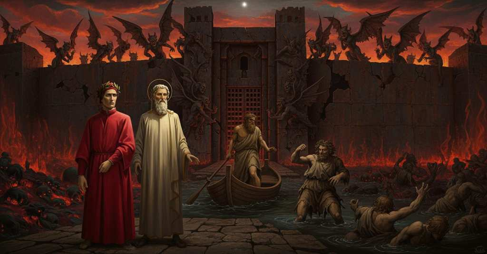

Inferno — Canto 8

Dante e Virgilio attraversano la palude Stigia con Flegiàs, respingono Filippo Argenti, raggiungono la città di Dite e vengono fermati dai demoni alle sue porte, finché Virgilio annuncia un soccorritore che aprirà loro la via. Dante and Virgil cross the Styx marsh with Phlegyas, repel Filippo Argenti, reach the city of Dis, and are stopped by demons at its gates, until Virgil announces a rescuer who will open the way for them. ダンテとウェルギリウスはフレギアスとともにスティクスの沼を渡り、フィリッポ・アルジェンティを退け、ディーテの都に着くが、その門で悪魔たちに阻まれ、やがてウェルギリウスは二人のために道を開く救助者を告げる。
1
Io dico, seguitando, ch’assai prima
I say, continuing, that well before
語りを続けるが、我々が
2
che noi fossimo al piè de l’alta torre,
we were at the foot of the tall tower,
その高い塔の麓に着くよりずっと前に、
3
li occhi nostri n’andar suso a la cima
our eyes went upward to the summit
我々の目はその頂へと向けられた、
4
per due fiammette che i vedemmo porre,
for two small flames we saw placed there,
そこに灯された二つの小さな炎のため、
5
e un’altra da lungi render cenno,
and another from far away return a sign,
そして遠くからもう一つが合図を返すのを、
6
tanto ch’a pena il potea l’occhio tòrre.
so far the eye could barely take it in.
目でかろうじて捉えることができるほど遠くから。
7
E io mi volsi al mar di tutto ’l senno;
And I turned to the sea of all wisdom;
そこで私はあらゆる知恵の海へと向き直り、
8
dissi: «Questo che dice? e che risponde
I said: “What does this say? And what does
言った。「これは何を伝え、そして何に答えているのですか
9
quell’ altro foco? e chi son quei che ’l fenno?».
that other fire answer? And who are they who made it?”.
あのもう一つの火は？そしてそれを灯したのは誰なのですか？」と。
10
Ed elli a me: «Su per le sucide onde
And he to me: “Over the filthy waves
すると彼は私に言った。「汚れた波の上を
11
già scorgere puoi quello che s’aspetta,
you can already make out what is expected,
お前はすでに見定められるはずだ、待ち望まれているものを。
12
se ’l fummo del pantan nol ti nasconde».
if the smoke of the marsh does not hide it from you”.
もし沼の霧がお前からそれを隠さなければ」。
13
Corda non pinse mai da sé saetta
A bowstring never thrust from itself an arrow
弦がこれまで放ったいかなる矢も、
14
che sì corresse via per l’aere snella,
that ran so swiftly through the slender air,
空をこれほど素早く駆けることはなかった、
15
com’ io vidi una nave piccioletta
as I saw a little boat
私が見た小さな舟ほどには。
16
venir per l’acqua verso noi in quella,
coming through the water toward us in that moment,
その舟は水面をこちらへ向かってやって来た、
17
sotto ’l governo d’un sol galeoto,
under the command of a single boatman,
ただ一人の漕ぎ手の操る下で。
18
che gridava: «Or se’ giunta, anima fella!».
who was shouting: “Now you have come, felonious soul!”.
彼は叫んでいた。「さては着いたな、邪悪な魂め！」と。
19
«Flegïàs, Flegïàs, tu gridi a vòto»,
“Phlegyas, Phlegyas, you shout in vain,”
「フレギアスよ、フレギアス、お前の叫びは虚しい」
20
disse lo mio segnore, «a questa volta:
said my lord, “this time:
と私の主は言った、「今回は、
21
più non ci avrai che sol passando il loto».
you will have us no longer than for crossing the mire”.
泥沼を渡る間だけ、我々を乗せるにすぎぬ」。
22
Qual è colui che grande inganno ascolta
As is he who learns of a great deception
大いなる欺瞞を聞かされた者が、
23
che li sia fatto, e poi se ne rammarca,
that has been done to him, and then resents it,
それが自分に対して行われ、後にそれを悔しがるように、
24
fecesi Flegïàs ne l’ira accolta.
so Phlegyas became in his gathered wrath.
フレギアスは募らせた怒りの中にそうなった。
25
Lo duca mio discese ne la barca,
My leader descended into the boat,
私の導き手は小舟に降り、
26
e poi mi fece intrare appresso lui;
and then had me enter after him;
そして私を彼の後から入らせた。
27
e sol quand’ io fui dentro parve carca.
and only when I was inside did it seem laden.
私が入った時だけ、舟は重くなったように見えた。
28
Tosto che ’l duca e io nel legno fui,
As soon as my guide and I were in the vessel,
導き手と私が舟に乗るとすぐに、
29
segando se ne va l’antica prora
its ancient prow goes on, cutting
古い舳先は進んで行った、水を切り裂きながら
30
de l’acqua più che non suol con altrui.
the water more than it is wont to with others.
他の者たちといる時よりも深く。
31
Mentre noi corravam la morta gora,
While we were crossing the dead swamp,
我らが死の沼を渡っていると、
32
dinanzi mi si fece un pien di fango,
before me one full of mud appeared,
目の前に泥まみれの者が現れ、
33
e disse: «Chi se’ tu che vieni anzi ora?».
and said: “Who are you that comes before your time?”.
言った、「刻の前に来るお前は何者だ？」と。
34
E io a lui: «S’i’ vegno, non rimango;
And I to him: “If I come, I do not remain;
そして私は彼に、「来はしたが、留まりはせぬ。
35
ma tu chi se’, che sì se’ fatto brutto?».
but who are you, who have become so ugly?”.
だがお前は何者だ、かくも醜い姿になり果てて？」と。
36
Rispuose: «Vedi che son un che piango».
He answered: “You see that I am one who weeps”.
彼は答えた、「御覧の通り、私は泣く者だ」。
37
E io a lui: «Con piangere e con lutto,
And I to him: “With weeping and with grief,
私は彼に言った、「泣きながら、嘆きながら、
38
spirito maladetto, ti rimani;
cursed spirit, you remain;
呪われし霊よ、そこに留まるがよい。
39
ch’i’ ti conosco, ancor sie lordo tutto».
for I know you, even though you are all filthy”.
お前が何者か、私は知っているのだ、たとえ全身汚れていようとも」。
40
Allor distese al legno ambo le mani;
Then he stretched both hands toward the boat;
すると彼は両手を舟へと伸ばした。
41
per che ’l maestro accorto lo sospinse,
at which the prudent master pushed him off,
それゆえ目敏い師は彼を突き放し、
42
dicendo: «Via costà con li altri cani!».
saying: “Away there with the other dogs!”.
言った、「向こうへ行け、他の犬どもの所へ！」と。
43
Lo collo poi con le braccia mi cinse;
Then with his arms he clasped my neck;
それから私の首を両腕で抱きしめ、
44
basciommi ’l volto e disse: «Alma sdegnosa,
he kissed my face and said: “Indignant soul,
私の顔に口づけして言った、「憤れる魂よ、
45
benedetta colei che ’n te s’incinse!
blessed is she who conceived you!
そなたを身ごもりし女は祝福されん！
46
Quei fu al mondo persona orgogliosa;
He was in the world an arrogant person;
この者は現世では傲慢な人間だった。
47
bontà non è che sua memoria fregi:
there is no goodness that adorns his memory:
その記憶を飾るほどの善行もなく、
48
così s’è l’ombra sua qui furïosa.
thus his shade is furious here.
それゆえその亡霊はここで荒れ狂うのだ。
49
Quanti si tegnon or là sù gran regi
How many up there now hold themselves great kings
今、かの世で偉大な王と自惚れる者たちも、
50
che qui staranno come porci in brago,
who here will stand like pigs in mire,
ここでは泥の中の豚のように横たわり、
51
di sé lasciando orribili dispregi!».
leaving of themselves horrible contempt!”.
自らに恐るべき侮蔑を残すだろう！」と。
52
E io: «Maestro, molto sarei vago
And I: “Master, I would be very eager
そして私は、「師よ、私はぜひとも
53
di vederlo attuffare in questa broda
to see him dunked in this slop
彼がこの汚水に沈められるのを
54
prima che noi uscissimo del lago».
before we came out of the lake”.
我らがこの沼を出る前に見たいのです」。
55
Ed elli a me: «Avante che la proda
And he to me: “Before the shore
すると彼は私に、「岸が
56
ti si lasci veder, tu sarai sazio:
lets you see it, you will be satisfied:
そなたに見える前に、そなたは満たされるだろう。
57
di tal disïo convien che tu goda».
of such a desire it is fitting that you have joy”.
そのような望みは、そなたが享受するにふさわしい」。
58
Dopo ciò poco vid’ io quello strazio
A little after this I saw such torment
その後まもなく、私はあの者が
59
far di costui a le fangose genti,
inflicted on him by the muddy people,
泥まみれの者たちによって八つ裂きにされるのを
60
che Dio ancor ne lodo e ne ringrazio.
that I still praise and thank God for it.
見たので、今も神を称え、感謝している。
61
Tutti gridavano: «A Filippo Argenti!»;
They all were shouting: “At Filippo Argenti!”;
皆が叫んでいた、「フィリッポ・アルジェンティを！」と。
62
e ’l fiorentino spirito bizzarro
and the bizarre Florentine spirit
そしてその気性の荒いフィレンツェの霊は、
63
in sé medesmo si volvea co’ denti.
turned on himself with his own teeth.
己自身の体に歯を立てていた。
64
Quivi il lasciammo, che più non ne narro;
We left him there, of him I say no more;
そこで我らは彼を置き去りにした、これ以上は語るまい。
65
ma ne l’orecchie mi percosse un duolo,
but on my ears there struck a sound of grief,
だが私の耳を一つの嘆きが打ち、
66
per ch’io avante l’occhio intento sbarro.
so that ahead I strain my eyes wide open.
それゆえ私は前方を凝視し、目を大きく見開いた。
67
Lo buon maestro disse: «Omai, figliuolo,
The good master said: 'Now, my son,
善き師は言った、『さあ、息子よ、
68
s’appressa la città c’ha nome Dite,
the city named Dis is drawing near,
ディーテという名の都が近づいてきたぞ、
69
coi gravi cittadin, col grande stuolo».
with its grave citizens, with its great host.'
重々しい民と、大いなる群れと共に』。
70
E io: «Maestro, già le sue meschite
And I: 'Master, already its mosques
そして私は、『師よ、すでにその尖塔を
71
là entro certe ne la valle cerno,
there within the valley I certainly discern,
谷の奥にはっきりと私は認めます、
72
vermiglie come se di foco uscite
vermilion as if they had come out of fire
まるで火の中から出てきたかのように
73
fossero». Ed ei mi disse: «Il foco etterno
they were.' And he to me: 'The eternal fire
真っ赤です』。すると彼は私に言った、『永遠の火が
74
ch’entro l’affoca le dimostra rosse,
that enflames them within shows them red,
その内部を燃やし、赤く見せているのだ、
75
come tu vedi in questo basso inferno».
as you see in this lower Hell.'
この下層地獄でお前が見るようにな』。
76
Noi pur giugnemmo dentro a l’alte fosse
We finally came within the deep moats
我々はついに深い堀の内側に着いた、
77
che vallan quella terra sconsolata:
that surround that disconsolate land:
その慰めなき地を囲む堀に。
78
le mura mi parean che ferro fosse.
the walls seemed to me to be of iron.
城壁は私には鉄でできているように思われた。
79
Non sanza prima far grande aggirata,
Not without first making a great circuit,
まずは大きく回り道をせずには、
80
venimmo in parte dove il nocchier forte
we came to a place where the strong ferryman
我々はとある場所に着いた、そこで屈強な渡し守が
81
«Usciteci», gridò: «qui è l’intrata».
'Get out,' he cried: 'here is the entrance.'
『ここで降りろ』と叫んだ、『ここが入り口だ』と。
82
Io vidi più di mille in su le porte
I saw more than a thousand upon the gates
私は門の上に千以上の者を見た
83
da ciel piovuti, che stizzosamente
rained from heaven, who angrily
天から降ってきた者たちで、彼らは怒りを込めて
84
dicean: «Chi è costui che sanza morte
said: "Who is this who without death
言った、「死ぬことなく
85
va per lo regno de la morta gente?».
goes through the kingdom of the dead people?".
死せる民の王国を行くこの者は誰だ？」と。
86
E ’l savio mio maestro fece segno
And my wise master made a sign
そして私の賢い師は合図をした
87
di voler lor parlar segretamente.
that he wished to speak with them secretly.
彼らと密かに話したいと。
88
Allor chiusero un poco il gran disdegno
Then they checked a little their great disdain
すると彼らは大いなる侮蔑を少し収め
89
e disser: «Vien tu solo, e quei sen vada
and said: "You come alone, and let him go away
そして言った、「お前だけ来い、そしてそいつは去れ
90
che sì ardito intrò per questo regno.
who so boldly entered this kingdom.
かくも大胆にこの王国へ入って来たそいつは。
91
Sol si ritorni per la folle strada:
Let him return alone by the foolish path:
独りであの狂気の道を引き返すがいい。
92
pruovi, se sa; ché tu qui rimarrai,
let him try, if he knows how; for you shall remain here,
できるものなら試してみよ。お前はここに残るのだからな、
93
che li ha’ iscorta sì buia contrada».
who have escorted him through so dark a country."
これほど暗い土地へ彼を案内したお前は」。
94
Pensa, lettor, se io mi sconfortai
Think, reader, if I became disheartened
考えてほしい、読者よ、私がどれほど落胆したかを
95
nel suon de le parole maladette,
at the sound of the accursed words,
その呪われた言葉の響きに、
96
ché non credetti ritornarci mai.
for I did not believe I would ever return.
もはや決して帰れるとは思わなかったのだから。
97
«O caro duca mio, che più di sette
"O my dear duke, who more than seven
「おお、我が親愛なる導き手よ、あなたは七度以上も
98
volte m’hai sicurtà renduta e tratto
times have rendered me security and drawn me
私に確信を与え、引き出してくださった
99
d’alto periglio che ’ncontra mi stette,
from high peril that stood against me,
私の前に立ちはだかった大いなる危険から、
100
non mi lasciar», diss’ io, «così disfatto;
do not leave me," I said, "so undone;
私を見捨てないでください」、私は言った、「このように打ちのめされたままに。
101
e se ’l passar più oltre ci è negato,
and if the passage farther is denied to us,
そしてもしこれ以上進むことが我々に拒まれるなら、
102
ritroviam l’orme nostre insieme ratto».
let us retrace our steps together swiftly."
我々の足跡を共に素早くたどり直しましょう」。
103
E quel segnor che lì m’avea menato,
And that lord who had led me there,
するとそこまで私を導いてきたその主は、
104
mi disse: «Non temer; ché ’l nostro passo
said to me: "Do not fear; for our passage
私に言った、「恐れるな。我々の歩みを
105
non ci può tòrre alcun: da tal n’è dato.
no one can take from us: by Such a One it is given.
誰にも奪うことはできぬ。かくも大いなる方からそれは与えられているのだ。
106
Ma qui m’attendi, e lo spirito lasso
But wait for me here, and your weary spirit
だがここで私を待て、そして疲れた魂を
107
conforta e ciba di speranza buona,
comfort and feed with good hope,
慰め、よき希望で養うのだ、
108
ch’i’ non ti lascerò nel mondo basso».
for I will not leave you in the world below."
私はお前を下の世界に見捨てはしない」。
109
Così sen va, e quivi m’abbandona
Thus he goes, and there he abandons me,
かくして彼は行き、そしてそこで私を置き去りにする
110
lo dolce padre, e io rimagno in forse,
the sweet father, and I remain in doubt,
その優しい父は、そして私は疑念の中に残される、
111
che sì e no nel capo mi tenciona.
for yes and no contend in my head.
然りと否が頭の中で私と争う。
112
Udir non potti quello ch’a lor porse;
I could not hear what he proposed to them;
彼が彼らに何を申し出たかは聞くことができなかった。
113
ma ei non stette là con essi guari,
but he did not stay there long with them,
しかし彼は彼らとそこに長くは留まらず、
114
che ciascun dentro a pruova si ricorse.
for each one vied to run back inside.
彼らは皆、競って内へと駆け戻った。
115
Chiuser le porte que’ nostri avversari
Those our adversaries slammed the gates
我々の敵対者たちは門を閉ざした
116
nel petto al mio segnor, che fuor rimase
in my lord's face, who remained outside
我が主の胸の前に、彼は外に残され
117
e rivolsesi a me con passi rari.
and turned back to me with slow steps.
そしてゆっくりとした足取りで私の方へ向き直った。
118
Li occhi a la terra e le ciglia avea rase
His eyes to the ground and his brows were shorn
目は地に向けられ、その眉からは
119
d’ogne baldanza, e dicea ne’ sospiri:
of all confidence, and he said in sighs:
あらゆる気概が剃り落とされ、溜息まじりに言った、
120
«Chi m’ha negate le dolenti case!».
"Who has denied me the houses of sorrow!".
「誰が私にこの嘆きの家々を拒んだのか！」。
121
E a me disse: «Tu, perch’ io m’adiri,
And to me he said: "You, though I am angered,
そして私に言った、「お前は、私が憤るからといって、
122
non sbigottir, ch’io vincerò la prova,
be not dismayed, for I shall win the trial,
怯えるな、私はこの試練に打ち勝つだろう、
123
qual ch’a la difension dentro s’aggiri.
whoever within may circle for the defense.
内に誰が守りについていようとも。
124
Questa lor tracotanza non è nova;
This their insolence is not new;
彼らのこの横柄さは新しいものではない。
125
ché già l’usaro a men segreta porta,
for they used it once at a less secret gate,
かつて彼らはそれを、より秘密でない門で使ったのだ、
126
la qual sanza serrame ancor si trova.
which without a lock is still to be found.
その門は今も錠なしで見られる。
127
Sovr’ essa vedestù la scritta morta:
Over it you saw the dead inscription:
その上でお前はあの死の銘を見たはずだ。
128
e già di qua da lei discende l’erta,
and already on this side of it, descending the steep,
そしてすでにその向こうから坂を下りてくる、
129
passando per li cerchi sanza scorta,
passing through the circles without an escort,
護衛もなく圏を通り抜け、
130
tal che per lui ne fia la terra aperta».
comes one by whom the city shall be opened to us."
その者によってこの地は我々に開かれるだろう」。